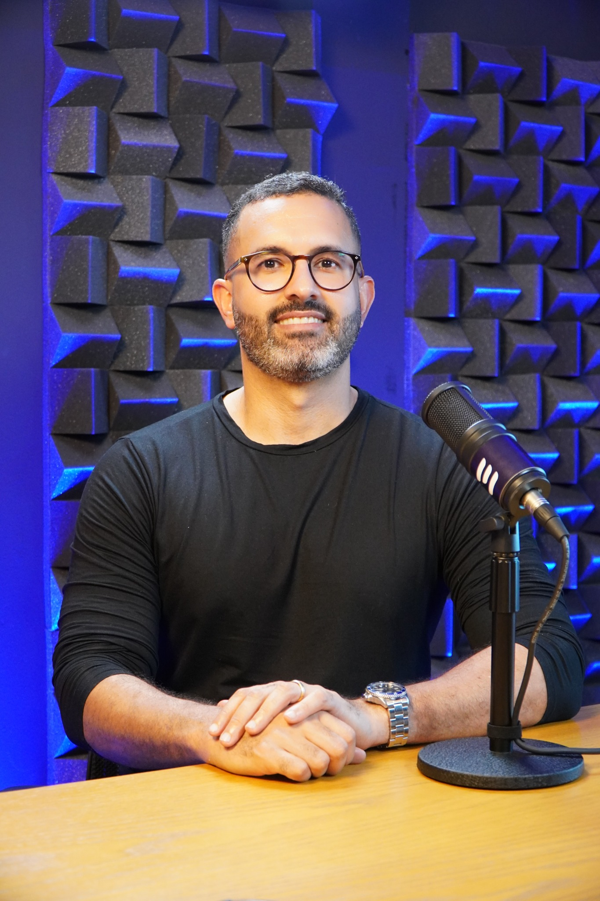

Cronograma pronto, os assuntos preferidos da FGV (que sempre caem) e as questões certas para você estudar menos matérias, em menos tempo, e ainda assim carimbar o "aprovada" com mais de 25 pontos.
Quero meu cronograma + acesso agora7 dias de garantia incondicional · acesso imediato

Você já reprovou no Exame de Suficiência — talvez mais de uma vez — e cada reprovação doeu um pouco mais.
Você já gastou dinheiro em cursos caros, cheios de videoaula, e no fim das contas continuou sem norte, sem saber por onde começar.
Você não tem tempo. Trabalha o dia inteiro, cuida da casa, da família, e chega no fim do dia sem energia para estudar 4 ou 5 horas seguidas — muito menos assistir horas de vídeo.
Você sente que estudou errado: muito conteúdo, pouco resultado. Passou por apostilas de 300 páginas e continua sem saber se está estudando o que realmente cai.
Se alguma dessas frases descreve você, o problema nunca foi a sua capacidade. O problema é o método.
Você não precisa estudar 8 matérias por 4 horas ao dia para passar no CFC. Você precisa de três coisas, na ordem certa:
Saber exatamente o que estudar hoje — não amanhã, não semana que vem. Hoje.
Saber o que exatamente a FGV cobra na prova, com o guia do que cai em cada assunto — sem enrolação, sem 40 páginas para aprender um artigo de lei.
Resolver questões de verdade, porque é resolvendo que você aprende — não assistindo.
Isso é o que o CFC Express 2.0 entrega. Não é mais um curso com "conteúdo completo". É um sistema enxuto e direto ao ponto, pensado para quem tem 1 hora por dia e não pode perder tempo com o que não cai na prova.
O método foi desenhado por Felipe Nunes, criador do CFC Academy, que entende na prática a dor de quem precisa passar no Exame de Suficiência com pouco tempo e muita responsabilidade nas costas.
Em vez de mais um curso genérico de centenas de horas, ele construiu um sistema enxuto e direto ao ponto: só o que a FGV cobra, na ordem certa, para você não perder um minuto com o que não cai na prova.
É esse mesmo método que já ajudou centenas de alunos a carimbarem o "aprovada" — muitos deles depois de já terem reprovado antes.
Um plano pronto, matéria por matéria, dia por dia — desenhado especificamente para o Exame de Suficiência. Você não perde mais tempo decidindo o que estudar: é só abrir e seguir.
Nada de resumo genérico. São os pontos que mais caem na prova, organizados de forma objetiva, para quem precisa aprender rápido e revisar rápido — o oposto de ficar perdida em videoaula longa.
Sistema de resolução de questões para praticar o que aprendeu, identificar pontos fracos e treinar no formato real da prova. Porque aprovação não vem de assistir — vem de resolver, revisar e repetir.
Você pode estar pensando: "1 hora por dia? Isso é pouco, não vai ser suficiente."
A maioria das candidatas não reprova por falta de tempo — reprova por falta de direção. Horas de estudo desorganizado valem menos que poucos minutos de estudo certeiro.
Com o cronograma certo e o conteúdo essencial, 1 hora de estudo focado rende mais do que 3 horas perdida entre vídeos, grupos de WhatsApp e apostilas genéricas.
Se você já investiu em curso caro e sentiu que jogou dinheiro fora, entendemos.
Já reprovou uma ou mais vezes e não aceita mais reprovar.
Trabalha, tem família, tem rotina corrida e não tem 4 horas por dia para estudar.
Quer ativar o CRC, sair do ciclo de reprovação e finalmente começar a vida profissional que sempre quis.
✓ Acesso imediato · 7 dias de garantia
Se sentir que o CFC Express 2.0 não é para você, é só pedir reembolso — sem perguntas, sem burocracia. O risco é todo nosso.
Já reprovou, já gastou, já se frustrou. Menos matéria, menos tempo, mais direção — é assim que você carimba a sua aprovação.
Quero estudar 1h por dia e passar no CFCSim — quando o estudo é direcionado. O problema nunca foi a quantidade de horas, foi a falta de foco no que realmente cai.
Porque o CFC Express 2.0 não é mais um curso completo com centenas de horas. É um sistema enxuto: cronograma pronto + conteúdo essencial + prática de questões. Você não precisa "descobrir" o caminho — o caminho já está desenhado.
O cronograma foi desenhado para rotina corrida. Se um dia você não conseguir, é só retomar no dia seguinte — o sistema se adapta ao seu ritmo, não o contrário.
1 ano de acesso completo ao CFC Questões, além do cronograma e dos pontos-chave, que ficam disponíveis para consulta.
Não. Mas indicamos o link de aulas completas no YouTube.